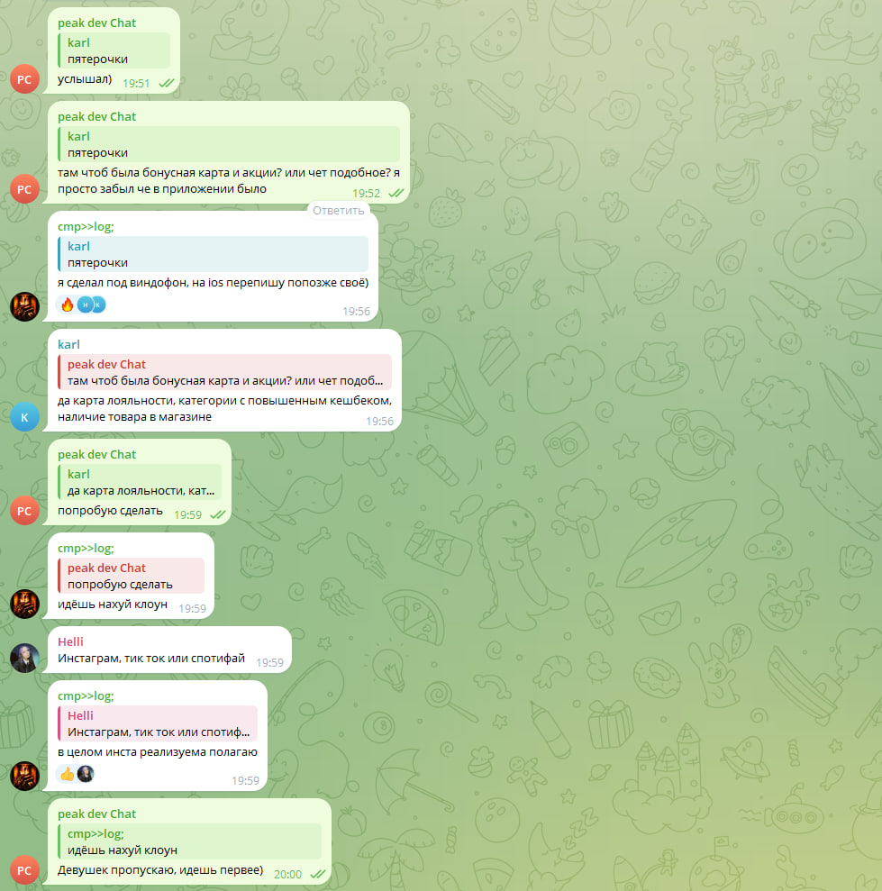

АРХИВ МАТЕРИАЛОВ
Переписка, скриншоты
и исходные XLSX
Статический сайт для просмотра материалов и поиска конкретных сообщений. Всё работает на обычном HTML/CSS/JS-хостинге — без PHP, Python, Node.js и базы данных.
6 201сообщение в индексе
6XLSX-файлов
14фотографий
100%статический сайт
Важно: автоматические категории используются для поиска и сортировки, а не являются юридической квалификацией. Для проверки открывай исходный XLSX и полный скриншот.
Архив материалов
Ниже находятся исходные XLSX и все предоставленные фотографии.
Исходные XLSX
Оригинальные таблицы доступны для скачивания.
Фотографии
Все предоставленные изображения, без обрезки для сайта.
Фото 01 — открыть полный размер Фото 02 — открыть полный размер
Фото 02 — открыть полный размер
Фото 02 — открыть полный размер
Фото 03 — открыть полный размерФото 04 — открыть полный размерФото 05 — открыть полный размерФото 06 — открыть полный размерФото 07 — открыть полный размерФото 08 — открыть полный размерФото 09 — открыть полный размерФото 10 — открыть полный размерФото 11 — открыть полный размерФото 12 — открыть полный размерФото 13 — открыть полный размерФото 14 — открыть полный размер